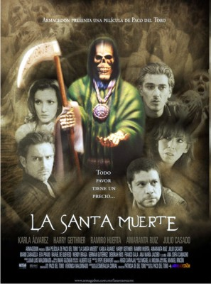

VideoExpress News • Número 4 • Noviembre de 2008
La Santa Muerte
Duración: 90 minutos
Formato: DVD

Tres historias entrecruzadas en difrentes esferas sociales, hacen de ésta una película ágil y dramática, donde diversos personajes acuden a La Santa Muerte, sin sospechar que todo favor tiene un precio.
Rubí (Karla Álvarez), es una madre angustiada que al saber que a su hija le quedan pocos días de vida ve en la Santa Muerte su única esperanza. Gustavo (Julio Casado), desempleado y con deudas, está enamorado de Cecilia (Wendy Braga), una mujer frívola sólo interesada en lujos, él intentará dárselos sin medir las consecuencias. Y Elena (Eva Prado), una esposa que se desvive por atender a su marido, sin sospechar que éste la engaña con su mejor amiga Raquel (Amaranta Ruiz ), quien pedirá a la Santa que él sea únicamente para ella.
La Santa Muerte es un ama intolerable y exigente...
Video y mensaje
si pueden ir de la mano si se enseña adecuadamente